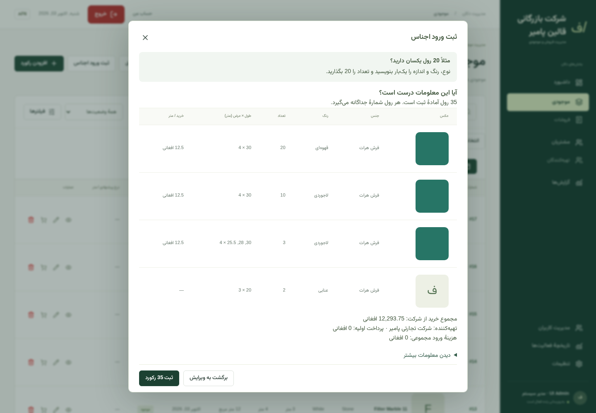
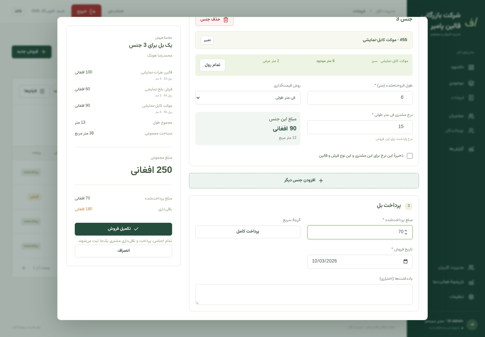
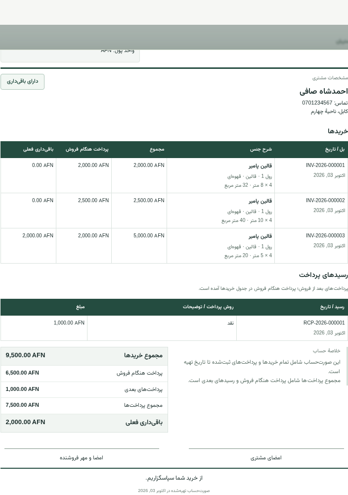
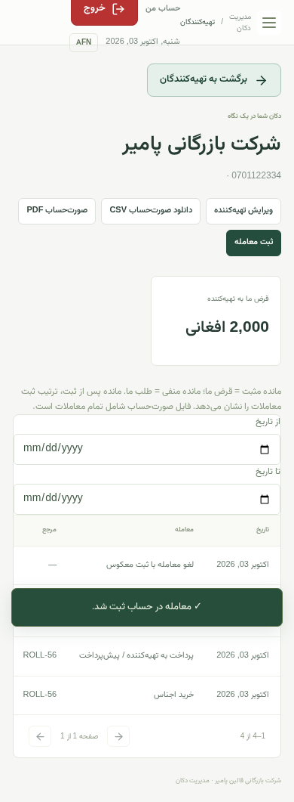
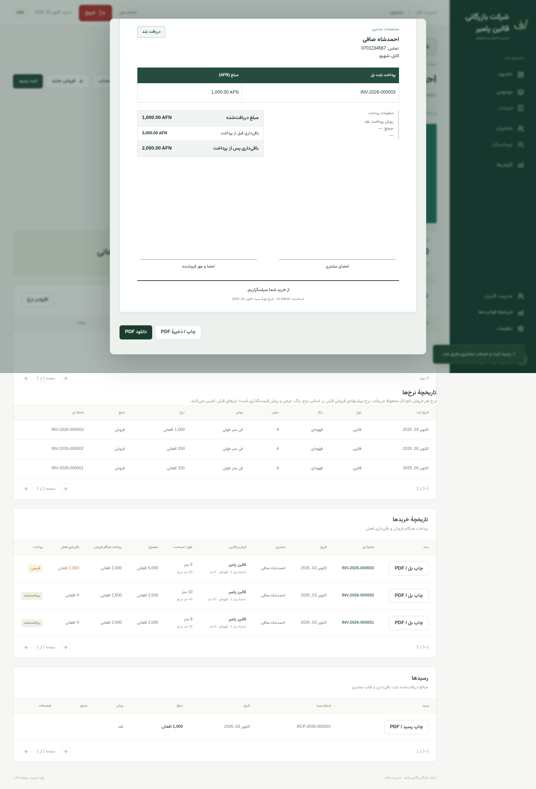

موجودی • فروشات • حساب مشتریان • تهیهکنندگان
تصویر از محیط برنامه
هر رول را جداگانه ثبت کنید و طول باقیماندهٔ آن را بدانید.
تهیهکننده، رنگ، اندازه و مصارف هر محموله را وارد کنید.
برای هر رول یک ثبت جدا و طول باقیماندهٔ آن را داشته باشید.
موجودی آمادهٔ فروش و رولهای کمموجود را از داشبورد بررسی کنید.
بررسی محموله • هر رول بهصورت جداگانه ثبت میشود
مشتری و جنسهای انتخابشده را وارد کنید و پرداخت را یکبار ثبت نمایید.
طول و نرخ هر جنس را جداگانه در همان بل بنویسید.
قیمت جنسها، پرداخت و باقیداری در یکجا محاسبه میشود.
طول فروختهشده از رول انتخابشده کم میشود.

صفحهٔ فروش چندجنسه • یک مشتری و چند جنس در یک بل
خریدها، پرداختها و باقیداری مشتری را در یک سابقهٔ کامل ببینید.
خریدها و رسیدهای بعدی در صورتحساب مشتری نمایش داده میشود.
با هر رسید، باقیداری حساب بهروز میشود.
بل، رسید و صورتحساب را PDF کنید؛ اندازهٔ چاپ آن A4 است.

صورتحساب مشتری • خریدها، رسیدها و باقیداری فعلی
جنسهای وارده را با حساب تهیهکننده و مصارف خرید پیوند دهید.
قیمت خرید فی متر و مصارف اضافی را هنگام ورود جنس بنویسید.
پرداخت، پیشپرداخت، قرض و صورتحساب تهیهکننده را ثبت کنید.
سود ناخالص از قیمت خرید ثبتشده حساب میشود؛ هزینهٔ نامعلوم مشخص میماند.

حساب تهیهکننده • جزئیات و فعالیت در موبایل
ابزارهای ساده برای ثبت سفارش، مدیریت موجودی و حسابوکتاب دکان.
رابط کاربری راستبهچپ و اسناد چاپی به زبان دری هستند.
صفحهها برای انجام کارهای اصلی دکان در هر دو آمادهاند.
نقشهای مدیر سیستم، مدیر و کارمند دسترسی هر شخص را تنظیم میکنند.

رسید چاپی • سند A4 برای شریکساختن با مشتری
نام شما • شماره تماس / واتساپ • ایمیل
معلومات تماس خود را اینجا بنویسید